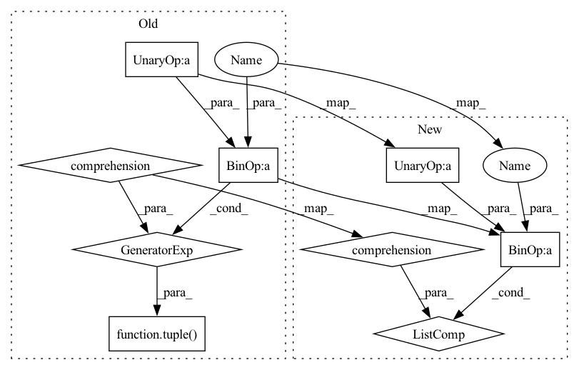

Pattern ID :4614
Before Change
// Estimate \int_0^1 v(s) \ds by Trapezoidal rule.
// Based on Section 1.4 of Stochastic Numerics for Mathematical Physics.
int_v_01 = tuple(-v0 - v1 for v0, v1 in zip(v(0.), v(1.)))
for t in torch.arange(0, 1 + 1e-7, dt1):
int_v_01 = tuple(a + 2. * b for a, b in zip(int_v_01, v(t)))
int_v_01 = tuple(a * dt1 / 2. for a in int_v_01)
return tuple( (dt ** (3 / 2) * a - dt * b).to(y0[0]) for a, b in zip(int_v_01, bm(t0)))
After Change
// Estimate \int_0^1 v(s) \ds by Trapezoidal rule.
// Based on Section 1.4 of Stochastic Numerics for Mathematical Physics.
// int_v_01 = [-v0 - v1 for v0, v1 in zip(v(0.), v(1.))]
int_v_01 = [-v0 - v1 for v0, v1 in zip(v(0.0), v(1.0))]
for t in torch.arange(0, 1 + 1e-7, dt1):
int_v_01 = [a + 2. * b for a, b in zip(int_v_01, v(t))]
int_v_01 = [a * dt1 / 2. for a in int_v_01]
return [(dt ** (3 / 2) * a - dt * b).to(y0[0]) for a, b in zip(int_v_01, bm(t0))]In pattern: SUPERPATTERN
Frequency: 3
Non-data size: 9
Instances Fragment ID: 16601615
Project Name: google-research/torchsde
Commit Name: bb4f95d2089b26315036813ba485d004b5699d65
Time: 2020-08-01
Author: 12689993+lxuechen@users.noreply.github.com
File Name: torchsde/core/methods/utils.py
M Class Name: AnonimousClass
N Class Name: AnonimousClass
M Method Name: compute_trapezoidal_approx(6)
N Method Name: compute_trapezoidal_approx(6)
M Parent Class:
N Parent Class:
M File Name: torchsde/core/methods/utils.py
N File Name: torchsde/core/methods/utils.py
M Start Line: 30
M End Line: 39
N Start Line: 31
N End Line: 41
Before Change
f_eval = self.sde.f(t0, y0)
g_prod_eval = self.sde.g_prod(t0, y0, I_k)
y1 = tuple(
y1_ + f_eval_ * dt + g_prod_eval_
for y1_, f_eval_, g_prod_eval_ in zip(y1, f_eval, g_prod_eval)
)
return t1, y1
@property
def strong_order(self):After Change
f_eval = self.sde.f(t0, y0)
g_prod_eval = self.sde.g_prod(t0, y0, I_k)
y1 = [
y1_ + f_eval_ * dt + g_prod_eval_
for y1_, f_eval_, g_prod_eval_ in zip(y1, f_eval, g_prod_eval)
]
return t1, y1
@property
def strong_order(self): Fragment ID: 16601626
Project Name: google-research/torchsde
Commit Name: bb4f95d2089b26315036813ba485d004b5699d65
Time: 2020-08-01
Author: 12689993+lxuechen@users.noreply.github.com
File Name: torchsde/core/methods/general/euler.py
M Class Name: EulerGeneral
N Class Name: EulerGeneral
M Method Name: step(4)
N Method Name: step(4)
M Parent Class: base_solver.GenericSDESolver
N Parent Class: base_solver.GenericSDESolver
M File Name: torchsde/core/methods/general/euler.py
N File Name: torchsde/core/methods/general/euler.py
M Start Line: 30
M End Line: 39
N Start Line: 30
N End Line: 39
Before Change
f_eval = self.sde.f(t0, y0)
g_prod_eval = self.sde.g_prod(t0, y0, I_k)
y1 = tuple(
y0_i + f_eval_i * dt + g_prod_eval_i
for y0_i, f_eval_i, g_prod_eval_i in zip(y0, f_eval, g_prod_eval)
)
t1 = t0 + dt
return t1, y1
@propertyAfter Change
f_eval = self.sde.f(t0, y0)
g_prod_eval = self.sde.g_prod(t0, y0, I_k)
y1 = [
y0_i + f_eval_i * dt + g_prod_eval_i
for y0_i, f_eval_i, g_prod_eval_i in zip(y0, f_eval, g_prod_eval)
]
t1 = t0 + dt
return t1, y1
@property Fragment ID: 16601648
Project Name: google-research/torchsde
Commit Name: bb4f95d2089b26315036813ba485d004b5699d65
Time: 2020-08-01
Author: 12689993+lxuechen@users.noreply.github.com
File Name: torchsde/core/methods/diagonal/euler.py
M Class Name: EulerDiagonal
N Class Name: EulerDiagonal
M Method Name: step(4)
N Method Name: step(4)
M Parent Class: base_solver.GenericSDESolver
N Parent Class: base_solver.GenericSDESolver
M File Name: torchsde/core/methods/diagonal/euler.py
N File Name: torchsde/core/methods/diagonal/euler.py
M Start Line: 30
M End Line: 37
N Start Line: 30
N End Line: 37